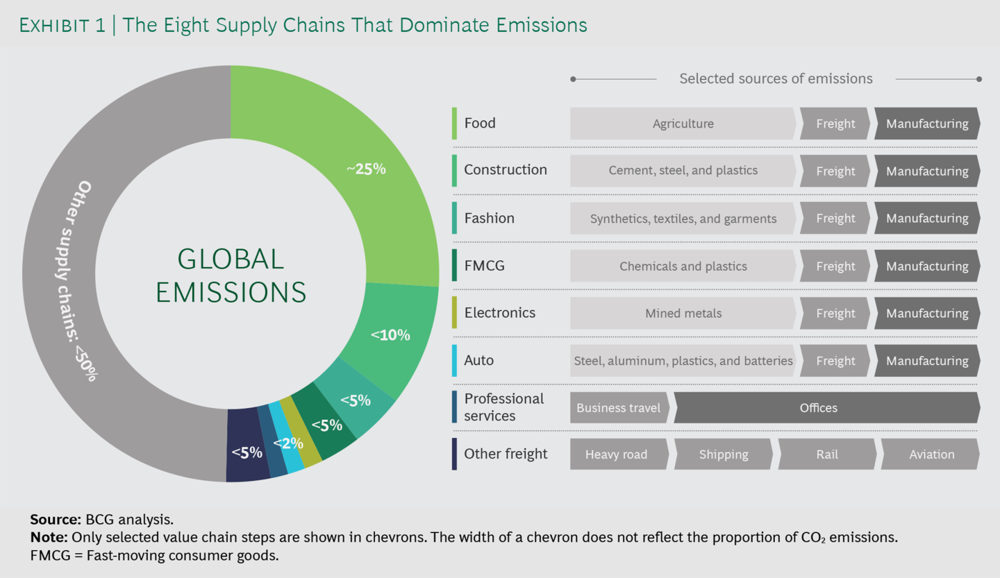

9 Net Zero
The predecessor to ‘Net Zero’ was and still is called ‘offsetting’.
9.1 Net Zero Trap
Burn Now - Pay Later
The threats of climate change are the direct result of there being too much carbon dioxide in the atmosphere. So it follows that we must stop emitting more and even remove some of it. This idea is central to the world’s current plan to avoid catastrophe. In fact, there are many suggestions as to how to actually do this, from mass tree planting, to high tech direct air capture devices that suck out carbon dioxide from the air.
The current consensus is that if we deploy these and other so-called “carbon dioxide removal” techniques at the same time as reducing our burning of fossil fuels, we can more rapidly halt global warming. Hopefully around the middle of this century we will achieve “net zero”. This is the point at which any residual emissions of greenhouse gases are balanced by technologies removing them from the atmosphere.
This is a great idea, in principle. Unfortunately, in practice it helps perpetuate a belief in technological salvation and diminishes the sense of urgency surrounding the need to curb emissions now.
We have arrived at the painful realisation that the idea of net zero has licensed a recklessly cavalier “burn now, pay later” approach which has seen carbon emissions continue to soar. It has also hastened the destruction of the natural world by increasing deforestation today, and greatly increases the risk of further devastation in the future.
9.2 Net Negative
Overshoot
Given the dawning realisation of how difficult Paris would be in the light of ever rising emissions and limited potential of BECCS, a new buzzword emerged in policy circles: the “overshoot scenario”. Temperatures would be allowed to go beyond 1.5°C in the near term, but then be brought down with a range of carbon dioxide removal by the end of the century. This means that net zero actually means carbon negative. Within a few decades, we will need to transform our civilisation from one that currently pumps out 40 billion tons of carbon dioxide into the atmosphere each year, to one that produces a net removal of tens of billions.
9.3 Direct Air Capture
Direct air capture, now being touted by some as the most promising technology out there, has taken hold. It is generally more benign to ecosystems because it requires significantly less land to operate than BECCS, including the land needed to power them using wind or solar panels.
Unfortunately, it is widely believed that direct air capture, because of its exorbitant costs and energy demand, if it ever becomes feasible to be deployed at scale, will not be able to compete with BECCS with its voracious appetite for prime agricultural land.
9.4 Net Zero Targeting
Navigating the nuances of net-zero targets analyses the momentum of targets for net-zero emissions across companies, cities and regions worldwide. We seek to unravel the net-zero targets to better enable the identification of truly ambitious actors and enhance support towards them. We offer recommendations for increasing target transparency with the aim of achieving greater accountability and ambition.
9.5 Action Tracker
9.5.1 Net Negative
India
India does not have a target for when it will cut emissions and has been under diplomatic pressure ahead of the COP26 summit in Glasgow in November.
Instead it aims to reduce emissions intensity — or the amount of pollution relative to GDP — by 33 per cent by 2030, relative to 2005 levels. Emissions intensity targets do not guarantee reductions in absolute emissions.
India is expected to be among the world’s biggest contributors to emissions growth in coming years because of its increasing energy needs, although its total emissions today are less than half of the US level.
Energy Minister Singh said: “I believe that it’s important for all the developed countries to talk about, not net zero, but about removing more carbon from the atmosphere than they are adding — net negative is what they need to talk about.”
9.6 Scope3 Value Chain Emissions
Addressing scope 3 emissions is fundamental for companies to realize credible climate change commitments and is mandatory for all members of Race to Zero. It lets customer-facing sectors use their influence to speed and support rapid decarbonization throughout the economy.
In most supply chains, the costs of getting to net zero (the state in which as much carbon is absorbed as is released into the atmosphere) are surprisingly low.

Eight global supply chains account for more than 50% of annual greenhouse gas emissions. Only a small proportion of these emissions are produced during final manufacturing. Most are embedded in the supply chain—in base materials, agriculture, and the freight transport needed to move goods around the world.
For producers of many of these materials, as well as for freight transport players, ambitious decarbonization is extremely challenging. Many emission reduction measures are comparatively expensive. Supply chain partners often operate in markets that are commoditized, with slim margins and limited opportunities for differentiation. Across a whole value chain, however, emissions may be addressed more affordably. In most supply chains, there is the potential for substantially more efficiency and for much greater reuse of materials. In addition, a large share of emissions comes from traditional power, which can be replaced relatively cheaply with renewables.
As a result of this—and the fact that emission-intensive base materials account for only a small share of end consumer prices—decarbonization is much less expensive for companies at the end of any given value chain. In fact, in all the value chains we have analyzed, full decarbonization would lead to an increase of no more than 4% in end consumer prices.
So why is supply chain decarbonization not already commonplace? The answer is that it is challenging.
For one thing, most companies do not understand the extent or the nature of the problem. While a manufacturer can calculate the greenhouse gas emissions from its own operations with a relatively high degree of confidence, getting a view on scope 3 emissions is complex. The challenges are especially daunting for companies with tens of thousands of individual products and significant turnover in the supplier base. Some even struggle to understand who their suppliers are in the first place. It does not help that data-sharing on product emission footprints is still in its infancy.
9.7 The Science Based Targets initiative (SBTi)
Beslik
Transition is win-win for us, who cares about the rest!
The Science Based Targets initiative (SBTi) will become a standalone UK company that will examine and validate corporate net zero emission targets, a service for which it charges fees. The profits will go to a separate non-profit umbrella body that will continue to set the standards for those targets, with the full structure to be put into place by year end.
Originally a partnership of a handful of non-profit organisations, including an UN initiative, CDP, the World Resources Institute and WWF, the body grew rapidly after it launched ahead of the 2015 Paris accord.
But it was forced to review its own governance practices following a formal complaint last year about potential conflicts of interest, based on concerns that it was setting the criteria for net zero targets while also charging companies to validate their targets.
The new chair of the SBTi board of trustees will be Francesco Starace, former chief executive of Enel, the Italian state-controlled utility company, who was on the board of the UN Global Compact corporate initiative.
SBTi has become one of the most influential advisers on climate change to companies and investors and the gold standard for corporate net zero plans. It has validated the plans of about 3,400 companies and institutions since it was established.
Although the group said it validated 87 per cent more companies in 2022 than the previous year, Starace said the company will “need to hire more people” and make better use of technology to meet rising demand.
The number of companies publishing targets this year had more than doubled from the previous year, and it aims to sign off plans for 10,000 companies by 2025. At the same time, it will face the challenge of companies weakening or restating their previously verified pledges. Oil and gas companies are among those that have shifted their targets, for example, including Shell and BP.
But the SBTi does not check the accuracy of the emissions data reported by companies and does not require the data to be verified by a third party. Starace said the SBTi’s job was to ensure a company “has committed to a creditor target in a credible manner.” “We are not the police of this system. We are guaranteeing that their promise is realistic and does not contravene the laws of science,” he said. And, are you still laughing?And, Mr Starace probably does not know this or maybe he does but then again, and so what? ExxonMobil executives privately sought to undermine climate science even after the oil and gas giant publicly acknowledged the link between fossil fuel emissions and climate change, according to previously unreported documents revealed by the Wall Street Journal.
The new revelations are based on previously unreported documents subpoenaed by New York’s attorney general as part of an investigation into the company announced in 2015. They add to a slew of documents that record a decades-long misinformation campaign waged by Exxon, which are cited in a growing number of state and municipal lawsuits against big oil.
Many of the newly released documents date back to the 2006-16 tenure of former chief executive Rex Tillerson, who oversaw a major shift in the company’s climate messaging. In 2006, Exxon publicly accepted that the climate crisis posed risks, and it went on to support the Paris agreement. Yet behind closed doors, the company behaved differently, the documents show.
The documents also show Exxon’s displeasure with scientific warnings from top authorities. After the Intergovernmental Panel on Climate Change, the United Nations’ top climate body, sounded the alarm about the urgent need to curb greenhouse-gas emissions in 2011, Tillerson told a leading Exxon researcher that the IPCC’s warning was “not credible”, and said he was “dissatisfied” with the media’s coverage of the warning about the worst-case climate scenarios.
Tillerson also wanted to engage with the scientists “to influence [the group], in addition to gathering info”, the Exxon researcher told colleagues in a 2012 email about the findings. Years later, Tillerson expressed doubt about the United Nations’ Paris accord months before it was signed. The international agreement aims to keep global heating “well below” 2C over pre-industrial temperatures.
After a climate science presentation to Exxon’s board of directors in April 2015, Tillerson called the 2C goal “something magical”, according to a summary of the meeting. “Who is to say 2.5 is not good enough?” he said, noting that meeting such targets would be “very expensive”. More here.
And we know most of this, and we know what it means, and, and, and, and, and. Nothing.